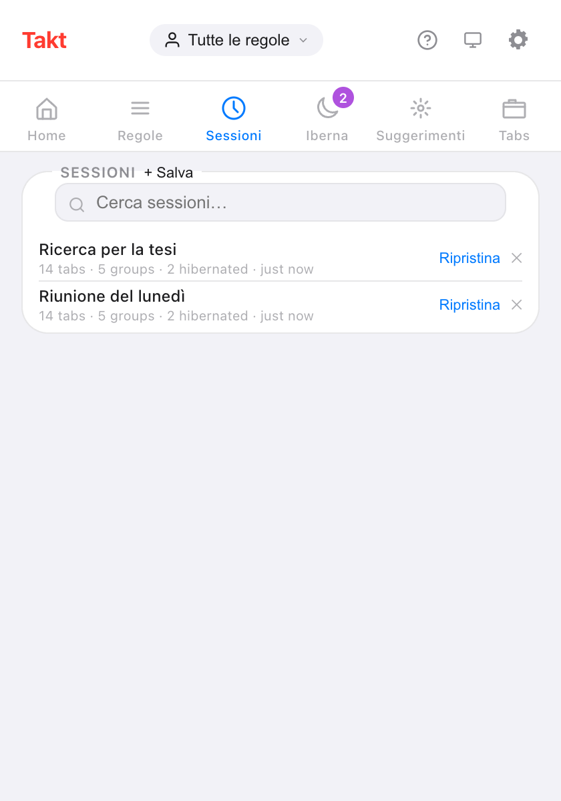
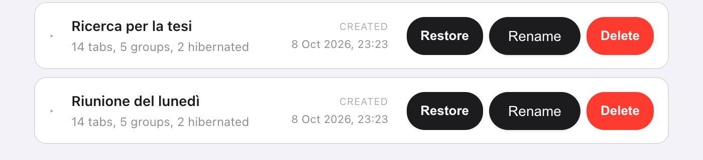

In breve: nel popup di Takt, apri Sessioni, fai clic su + Salva, dai un nome e scegli Questa finestra o Tutte le finestre. Più tardi fai clic su Ripristina per riavere le stesse schede, negli stessi gruppi con nome e colore.
- Salva ogni scheda, ogni gruppo (nome, colore, stato compresso), le schede sparse e l'elenco delle schede ibernate.
- Ripristina in una nuova finestra, oppure sostituisci quella corrente.
- Fino a 50 sessioni, salvate sul tuo computer. Premium
Perché "Continua da dove eri rimasto" di Chrome non basta?
Per un compito solo, basta. Attivalo e Chrome riapre all'avvio le schede dell'ultima sessione. Se ti serve solo questo, non ti serve un'estensione.
Non regge quando passi da un lavoro all'altro. Le schede della tesi, quelle della riunione del lunedì e quelle per organizzare il viaggio non possono essere tutte "l'ultima sessione". Chiudi la finestra della tesi per fare spazio alla riunione e le schede della tesi spariscono da quell'elenco.
Una sessione con nome è un segnalibro per un intero spazio di lavoro. Chiudi la finestra senza preoccuparti, perché puoi riaprirla per nome.
Come salvo una sessione di schede?
- Installa Takt dal Chrome Web Store.
- Apri il popup e vai al riquadro Sessioni.
- Fai clic su + Salva e scrivi un nome, fino a 60 caratteri. I nomi devono essere unici.
- Scegli Questa finestra (predefinita) o Tutte le finestre, poi fai clic su Salva.

Cosa salva una sessione?
| Salvato | Dettagli |
|---|---|
| Schede | URL e titolo di ogni scheda |
| Gruppi di schede | Nome, colore, stato compresso e quali schede appartengono a ciascuno |
| Schede sparse | Schede fuori da qualsiasi gruppo |
| Finestre | Una finestra, o tutte le finestre normali con Tutte le finestre |
| Schede ibernate | L'elenco delle schede ibernate, che viene ricostituito al ripristino |
Chrome non permette alle estensioni di aprire pagine chrome://, about: o delle estensioni, quindi quelle schede vengono saltate.
Come ripristino una sessione?
Fai clic su Ripristina. Una finestra di dialogo offre due modalità:
- Apri in una nuova finestra. La finestra corrente resta com'è.
- Sostituisci la finestra corrente. Le schede salvate si aprono nella finestra corrente, poi le schede che c'erano si chiudono.
La finestra di dialogo fa un conto alla rovescia di 7 secondi, poi ripristina con la modalità selezionata. Fai clic su Ripristina nella finestra di dialogo per non aspettare, oppure su Annulla. In una sessione con più finestre, la prima segue la tua scelta e tutte le altre si aprono come nuove finestre.
Posso rinominare le sessioni o salvarle automaticamente?
Sì, entrambe le cose.
- Rinominare: fai doppio clic su un nome nel popup, oppure usa Rename nella scheda Sessions della pagina delle opzioni. Premi Invio per salvare.
- Salvataggio automatico: attiva Salvataggio automatico alla chiusura in Settings. Chiudere una finestra salva le sue schede come sessione chiamata "Salvataggio auto" seguito da data e ora.
La pagina delle opzioni ti permette anche di espandere una sessione per vedere tutti i gruppi e le schede che contiene prima di ripristinarla.

Sessioni di Takt e opzioni integrate di Chrome a confronto
| Chrome "Continua da dove eri rimasto" | Sessioni di Takt | |
|---|---|---|
| Quante | L'ultima sessione | Fino a 50, con nome |
| Cosa conserva | Le schede aperte l'ultima volta | Qualsiasi istantanea che hai salvato, o un salvataggio automatico quando si chiude una finestra |
| Quando ripristina | All'avvio di Chrome | Ogni volta che fai clic su Ripristina |
| Costo | Gratis, integrato | Premium |
Cosa le sessioni non fanno
- Restano su questo computer. Le sessioni vivono nello spazio di archiviazione locale di Chrome e non seguono il tuo account Google. Per spostarle, usa un backup o la sincronizzazione.
- Sono istantanee. Una sessione salvata non cambia quando cambi la finestra. Salvala di nuovo con un nuovo nome per tenere una versione più recente.
- Il limite è 50. Elimina le vecchie per fare spazio. I salvataggi automatici sostituiscono il salvataggio automatico più vecchio, mai una sessione a cui hai dato un nome.
- Nessuno stato delle pagine. Il ripristino riapre gli URL. Il contenuto dei moduli e la posizione di scorrimento non vengono salvati.
Chiudi la finestra. Tieni il lavoro.
Aggiungi Takt a Chrome, è gratisDomande frequenti
Chrome salva da solo le sessioni di schede?
"Continua da dove eri rimasto" riapre l'ultima sessione all'avvio di Chrome. Tiene quella sola sessione, non un elenco di istantanee con nome.
Quante sessioni posso salvare in Takt?
Fino a 50. Quando l'elenco è pieno, elimina prima una sessione più vecchia. I salvataggi automatici fanno spazio sostituendo il salvataggio automatico più vecchio.
Le sessioni di schede sono gratuite in Takt?
No. Salvare, ripristinare, rinominare e salvare automaticamente sono funzioni Premium ($3/mese o $30/anno). Con il piano gratuito puoi vedere l'elenco delle sessioni salvate.
Le mie sessioni vengono caricate da qualche parte?
No. Sono salvate nello spazio di archiviazione locale di Chrome sul tuo computer. Lo lasciano solo se esporti un backup o attivi la Sincronizzazione file o la Sincronizzazione Drive. Vedi come Takt tiene i dati in locale.